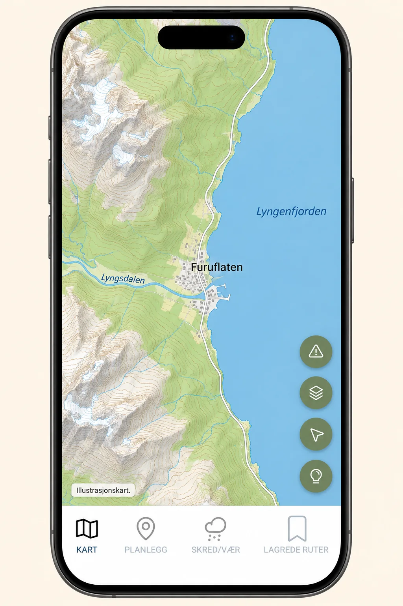
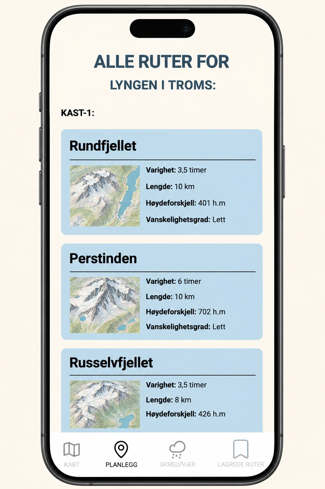
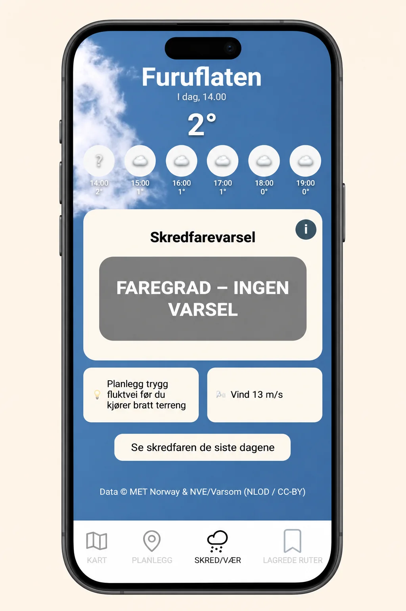
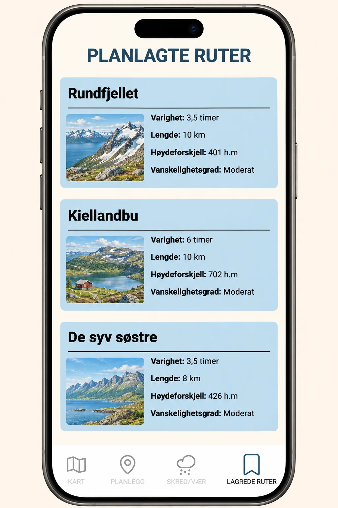

Skredvett.
Hvordan kan vi gjøre det enklere for folk på topptur å ta hensyn til skredfare når de planlegger en tur? I MIX203 utviklet vi Skredvett, en prototype som samler kart, vær og skredvarsler på ett sted. Gjennom innsiktsarbeid og prototyping utforsket vi hvordan brukeren kunne velge et fjellområde, sammenligne ruter og lagre turer til senere, med fokus på sikkerhet og brukervennlighet.
MIX203 · Universitetet i Bergen2025Prototype



